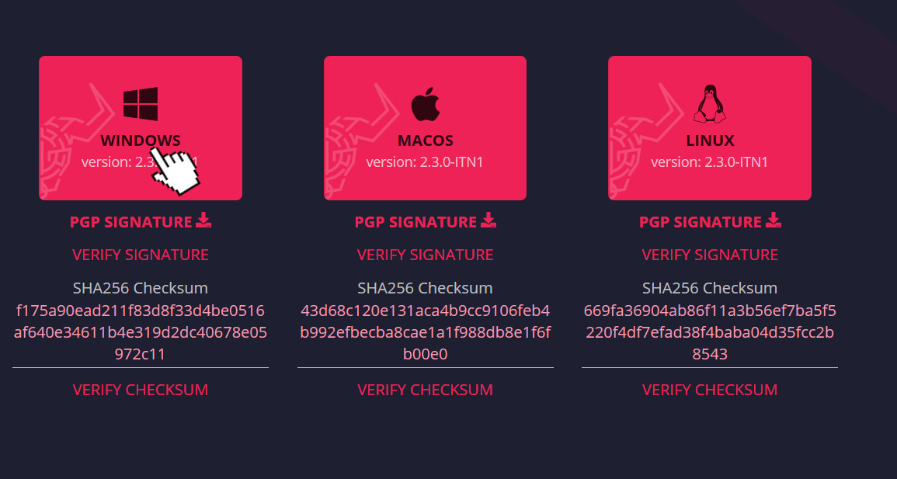
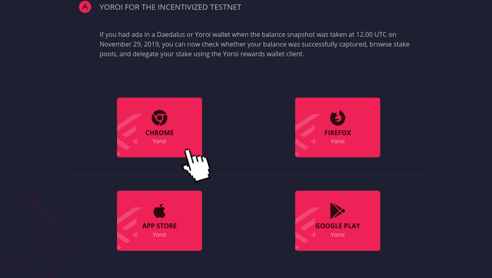
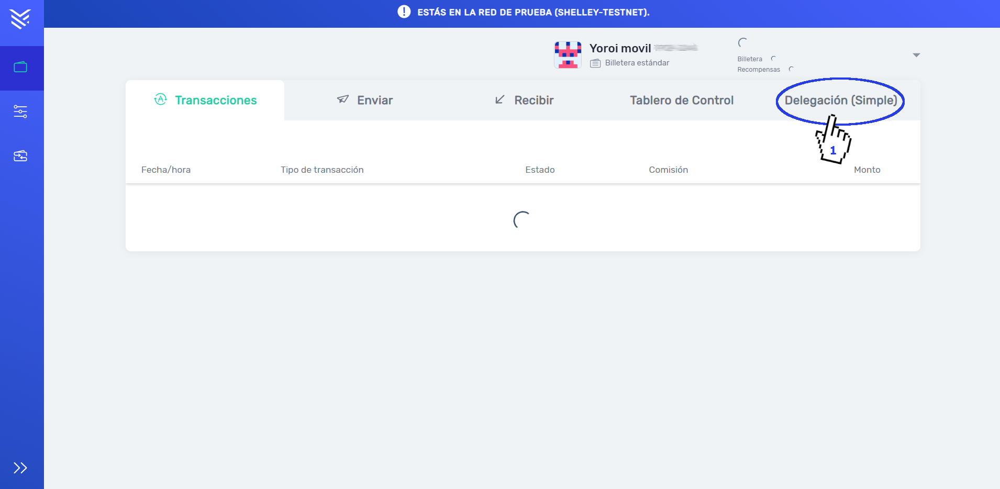
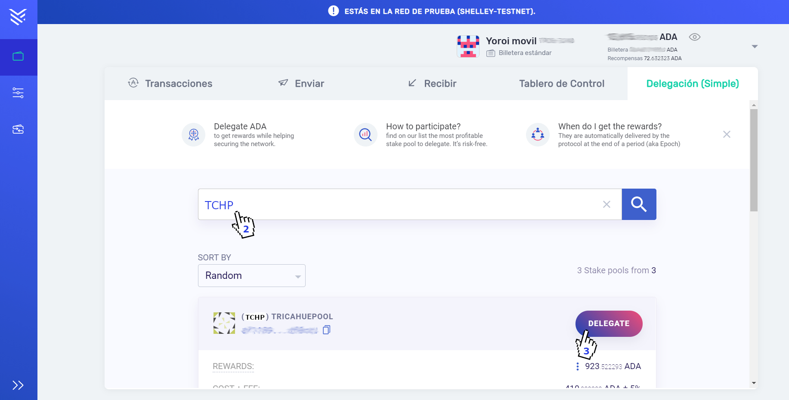
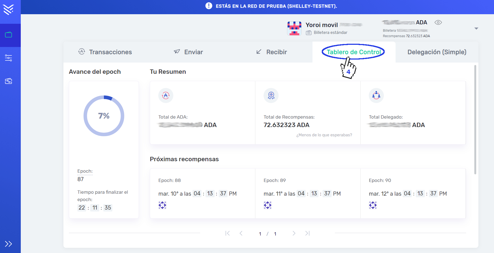

¿Como Delegar?
La delegación actualmente solo está habilitada en testnet Shelley y se puede realizar usando sus respectivas wallet testnet Daedalus y Yoroi. Hay que tener en cuenta que para poder participar en la testnet Shelley has de haber tenido tus ADAs en una de estas billeteras de la Mainet (Red Principal) el día 29 de noviembre del 2019, que fue la fecha que se hizo una copia (snapshot) de la red principal para pasarla a la red testnet. Las billeteras testnet daedalus y Yoroi las puedes descargar de la página oficial.
Descargada la billetera de tu preferencia.
Daedalus
Daedalus es una billetera de nodo completo y trabaja directamente sobre la cadena de bloques sin ningún intermediario, por ese motivo ofrece cierto grado de seguridad, el unico inconveniente es que deberás descargar toda la cadena de bloques en tu pc antes de poder trabajar, si tu pc tiene una conexión lenta o no tienes mucho espacio de almacenamiento entonces puedes probar la billetera liviana de Yoroi.
Yoroi
Yoroi es una billetera liviana que trabaja tanto en exploradores web como en dispositivos móviles, dentro de sus ventajas esta su rápida sincronización debido a que se conecta a los servidores de EMURGO para tener acceso a la cadena de bloques de Cardano, de esta manera el usuario no necesita descargar toda la cadena de bloques para trabajar en ella.
Después de instalarla si estas usando daedalus, deberás esperar a que sincronice y en el caso de que no lo hayas hecho antes (tanto Yoroi como Daedalus), deberás restaurar tu billetera como lo harías en cualquier billetera en la red principal usando las mismas palabras claves de tu billetera de la mainet donde tenías tus ADAs el día del snapshot (recuerda que la testnet es una copia de la red principal).
Si deseas una billetera más rápida tienes la opción de usar Yoroi, la tienes como extensión para explorador web o en versión para móvil
Una vez restaurada tu billetera, podrás ver el mismo saldo que tenías el día del snapshot, con ese saldo puedes delegar en tu pool que sea de tu preferencia
Recuerda que solo las recompensas (Reward) ganadas por delegación se incorporaran a tu billetera de la red principal una vez terminada la fase testnet
A continuación, se mostrara paso a paso como realizar el procesos de delegacion usando la extensión de Yoroi para explorador web.
Primero vamos a la pestaña de "Delegación (Simple)".
Una vez ahí podemos buscar hacia abajo el Pool de nuestra preferencia en la lista de Pools disponibles o si lo deseas busca el Pool directamente en la barra de busqueda, como se puede ver en este ejemplo buscamos a TricahuePool por su ticket TCHP, una vez encontrado haces clic en "DELEGATE", aceptas el cambio y listo.
Una vez realizada la delegación vas a la pestaña "Tablero de Control" en ella se mostrara la información del Pool al que has delegado así como los Reward (recompensas) recibidos por éste, Las recompensas comenzaran a llegar una vez pasada 2 epocas, solo si el Pool tiene suficientes delegantes como para permitirle poder firmar bloques, en la red Shelley dos epocas es equivalente a 2 dias (una epoca son 24 horas).
Si deseas ganar algo de ADAs además de apoyar un Pool, puedes elegir a los pool que cobren un porcentaje bajo de comisión.
Un pool con una comisión del 5% significa que la otra parte (95%) ira destinada para los delegantes, las Pools también pueden cobrar una tarifa fija por época que generalmente se usa para asegurar un ingreso mínimo destinado a mantencion basica, por esta razón suele ser una tarifa baja generalmente menor a 500 ADAs.
Un Pool con una tarifa baja no siempre es mejor, debes de tenerlo presente, si el operador del Pool no lo esta manteniendo adecuadamente, puede no firmar bloques de manera eficiente perdiendo alguno que otro y con ello las ganancias por epoca.